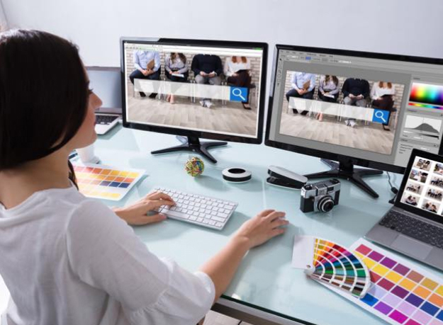
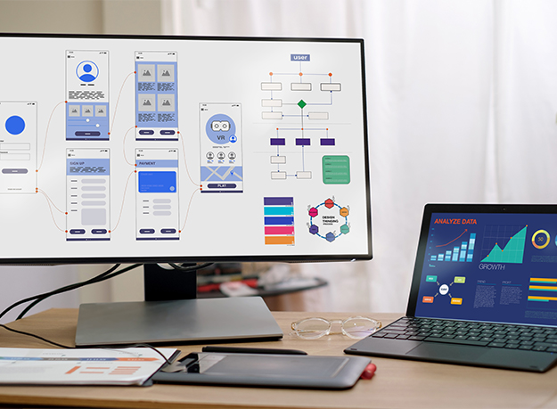

STUDY
WSSでは『今』必要な技術・知識を皆さんに学習して頂くために
業界のトレンドに合わせて、より良いものへ進化させております。
実際に学べるツールやソフト、半年間のスケジュールを紹介しております。
SOFT&TOOL
学習ソフト＆ツール
HTML LS(Living Standard)
webサイトを作成するためのマークアップ言語です。ブラウザ上でWebサイトを表示するための基礎的な言語であり、テキストや画像の表示、リンクの作成ができます。
CSS3
webサイトの見た目やスタイルを指定するためのスタイルシート言語です。テキストの色やサイズ、背景色や画像、要素の位置や幅を指定することが出来ます。
Java Script
webサイトに動的な振る舞いや双方的な機能を付け加えることのできるプログラミング言語です。コンテンツの表示・非表示や、アニメーションを付け加えることができます。
jQuery
jQueryはJavaScriptのライブラリです。jQueryを使用することで、シンプルに動的な表現を短いコードで簡単に実装することができるようになります。
Sass(Scss)
CSSの記述をより簡潔に記述するための拡張言語です。Sassを使うことでより効率的になり、チームで作業する際などに有効です。
Git
分散型バージョン管理システムです。ソフトウェア開発において、コードやプログラムの変更履歴を管理し、チームでの作業やバージョン管理を効率的に行うために使用されます。
テキストエディタ
コードを記述する際に使うソフトで、制作会社によって様々なエディタを使用します。当校ではMicrosoft製のVisual Studio Codeを使用し、EMMET等の拡張機能も学習します。
デザインレイアウト
デザインはセンスが必要だと思われがちですが、セオリーを押さえれば誰でもデザイン力を向上させる事が可能です。基礎をしっかり学び、より良いレイアウトを組めるよう学習します。
Adobe XD
webサイトやモバイルアプリ、音声デバイスのためのデザインツールです。ワイヤーフレーム、デザインカンプ、プロトタイプを作成、共有を一つのアプリで実現するソフトです。
Adobe Photoshop CC
世界で最も有名な画像編集ソフトです。写真の加工や、美しいグラフィックの制作などができます。訓練受講期間中はアドビアカウントを無料で使用する事ができます。
課外授業
Figma
XDと同じくUI/UXのためのデザインツールですが、Figmaはブラウザ上で作業できるのが特徴。近年ではXDからFigmaに移行する会社も多くなり、注目を集めています。
CMS(Word Press)
CMSとはコンテンツ・マネジメント・システムの略。専門知識がない人も、Web サイトの作成・更新・運営ができるシステムです。その中でも人気の高いWord Pressを学習します。
SCHEDULE
学習スケジュール
1ヶ月目
Web知識実習
Webサイト制作に必要なソフトや画像の仕組み、基本的なパソコンの使用方法やクラウドツールも使用しますので、今まで触れたことがない方でも毎日使用することで、覚えることが出来ます。
Web知識実習
Webサイトを制作する時に使用するHTMLやCSSなど基礎的な技術・知識を学習します。サイトを制作する基礎となる大事な部分です。学習した内容を用いて自己紹介サイトを制作します。
2ヶ月目

Webデザイン基礎実習
Photoshopを使用し、操作方法や画像編集、写真加工を学習します。Webサイトの制作には欠かせないソフトです。また、UI/UXデザインツールであるXDの基本操作も学び、Webデザイン制作実習につなげます。
Webデザイン制作実習
Webデザイン基礎実習で学んだことをベースにデザインの基礎知識なども身に付けます。ワイヤーフレーム、デザインカンプの制作など実践的に学習していきます。
3ヶ月目
CSS設計
命名規則の一種であるBEMを取り入れてコーディングが効率的にできるようにCSS設計を学びます。BEMを使うと、長期的なメンテナンス性が高くなったり、開発スピードを上げることができます。
コーポレートWebサイト実習
これまで学習した内容を用いてグループワークを行います。学校側が模擬的に案件を依頼し、グループ毎に1つのWebサイトを企画からデザイン・コーディングまでを手がけ、プレゼンを行います。
4ヶ月目
Javascript実習
Javascript(jQuery)を利用してWebサイトに動く要素やWebアプリケーションを追加する方法を、基礎から応用まで実践的に学習します。アニメーションなどの動的な要素を加えることで、デザインの幅が広がります。
Sass(SCSS)
Sass(SCSS)という拡張言語の導入方法、基本的な使い方を学習します。Sassを使うことで、CSSを効率よくコーディングできるようになります。ファイルを複数に分割出来るので、チーム管理・運営業務に重宝します。
5ヶ月目
レスポンシブWebデザイン基礎実習
スマートフォンやタブレットなど、様々な端末に対応したマルチディバイスなWebサイトを制作、学習します。レスポンシブWebデザイン基礎実習では、マルチディバイスの特性を理解し学習します。
レスポンシブWebデザイン制作実習
就職活動に必須なポートフォリオサイトを、レスポンシブ対応する設計・制作します。学んだことをアピールできる作品でもあるので、技術を活かせるよう、コンセプトからデザイン・コーディングまで仕上げていきます。
6ヶ月目

Webサイト企画・デザイン実習
実在する企業のWebサイトを模擬的な案件として制作します。企画デザインからコーディングを行うことで、仕事に近い感覚で流れを理解することが出来ます。企画・情報設計、デザインカンプなどを制作します。
Webサイト制作実習
Webサイト企画・デザイン実習内で制作したデザインカンプをもとにコーディング作業に取り組みます。6カ月の集大成でもあるので、訓練終了までに完成を目指します。成果物は就職活動で使用できます。
取得可能資格
エキスパート級合格率99%
WSSはサーティファイ認定校なので、学習した内容をもとに資格取得も可能です。
資格試験を通して基礎もしっかり身に付くのでお勧めです。
こちらは任意受験となる為、別途料金は発生しますが、
学習した内容を形にして証明できるので受験される方がとても多いです。
取得できる資格
WEBクリエイター能力認定試験 HTML5
・エキスパート級
更に詳しい内容は以下から確認できます。